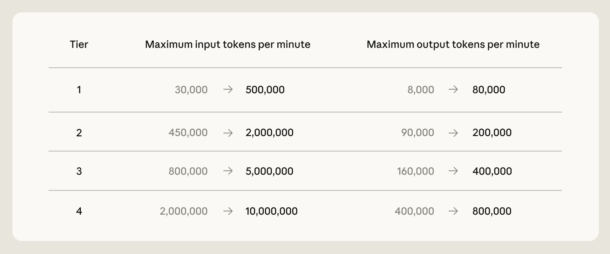

一、导语：一份 IPO 文件里翻出的算力大单
9 月 30 日，随着 Anthropic 筹备上市，路透社查阅的申报文件把一笔此前只闻其声的算力交易摊开：Anthropic 与 SpaceX 签署的合作，最高价值 845 亿美元。SpaceX 在 S-1 申报文件里写明了细节，Anthropic 自己招股书里的口径还要更高。核心数字很直白——每月 12.5 亿美元，付款一直持续到 2029 年 5 月，而解约只需要提前 90 天发通知。
二、背景分析：两个都在赶上市窗口的玩家
协议签于 2026 年 5 月。当时 Anthropic 正为 IPO 冲刺，收入一年翻 12 倍、账面亏损约 420 亿美元，它最缺的不是客户而是算力；另一头，马斯克一边推进 SpaceX 上市，一边把 Colossus 数据中心扩到惊人的规模，目标年底前上线 超过 100 万张 GPU。一个要电，一个要订单，协议就落在中间。
这也不是 Anthropic 唯一的算力来源。它同时握有 Amazon 最高 5 GW 的协议、Google 与 Broadcom 的 5 GW（2027 年上线）、Microsoft 与 NVIDIA 约 300 亿美元的 Azure 容量，以及 Fluidstack 的 500 亿美元美国基础设施投资。SpaceX 只是这套组合里最新、也最“非典型”的一块——一家火箭公司，来给一家 AI 公司供电。
三、核心内容：每月 12.5 亿，怎么算到 845 亿
三个数字锁定这笔交易
SpaceX 披露：协议覆盖 Colossus 一号与二号的算力资源，Anthropic 每月支付 12.5 亿美元（约合 83.97 亿元人民币），持续到 2029 年 5 月；2026 年 5、6 两个月处于算力爬坡期，执行优惠费率。剔除这两个月，按 SpaceX 的口径测算，Anthropic 至少付出 425 亿美元。而路透从 Anthropic 招股书看到的最新数字更高——合同金额上限达到 845 亿美元。两份文件对解约通知期的表述完全一致：90 天。
SpaceX 给出的理由是把自己用不完的产能变现，即“盘活自身基础设施当中闲置的算力资源”。对 Anthropic 而言，这是一个月内就能拿到的增量：超过 300 兆瓦、逾 22 万张 NVIDIA GPU，直接补给 Claude Pro 与 Max 订阅用户。同一时间，Anthropic 上调了 Claude Code 的五小时速率上限、取消了 Pro/Max 账户的峰时降速，并大幅提高 Opus 模型的 API 速率上限。

马斯克那边的账
站在 SpaceX 一侧，这是把重资产变成经常性收入。Colossus 二号大量采用英伟达最新的 Blackwell GPU，全部 10 吉瓦算力上线之后，公司预计 AI 基础设施业务的年营收可达 3000 亿至 5000 亿美元。换句话说，Anthropic 的月付只是这张更大算力账单上的一行。
四、各方反应：把风险写进了条款
路透的报道把重点放在那条“90 天可解约”上——对一家正在冲击 2 万亿美元估值的公司，这既是灵活性，也是不确定性的注脚：算力协议可以撤，收入承诺也就没看上去那么硬。
Anthropic 在公告里另有一套说法：算力要落在“法律与监管框架支持这种规模投资、供应链安全”的民主国家，用来满足金融、医疗、政府等受监管行业的数据驻留需求；它还承诺覆盖自有美国数据中心带来的居民电价上涨，并把这套承诺向海外延伸。
「SpaceX 借此可以盘活自身基础设施当中闲置的算力资源，将闲置产能变现。」
分析师的解读更冷静。Tomer Tunguz 指出，Anthropic 与 OpenAI 正在企业市场分层竞争，重定价与计费策略比模型本身更能决定输赢；而当供应商同时是投资方、客户和算力地主时，AI 基建的资金在几家巨头之间打转，循环成分本身就值得警惕。
五、深度解读：算力合同正在变成新的资产负债表
第一层含义是，AI 竞赛的入场券已经从“谁的模型强”换成了“谁签得到电”。Anthropic 规划未来十年至少投入 5180 亿美元建自有 AI 基础设施，这不是研发预算，是基建预算。第二层含义是那个“90 天”——它把长期承诺切成短期选项，既让 Anthropic 保留退出权，也意味着 SpaceX 的收入没有表面那么稳。第三层是角色错位：火箭公司把算力租给 AI 公司，而这家 AI 公司同时被云厂商、芯片厂商和主权资本持有，生态边界已经模糊到旧框架解释不了。
六、总结
一句话：845 亿美元买的不只是 GPU，而是时间——在 IPO 敲钟之前，Anthropic 用一份可随时抽身的合同，换来模型继续往上跑所需要的电。